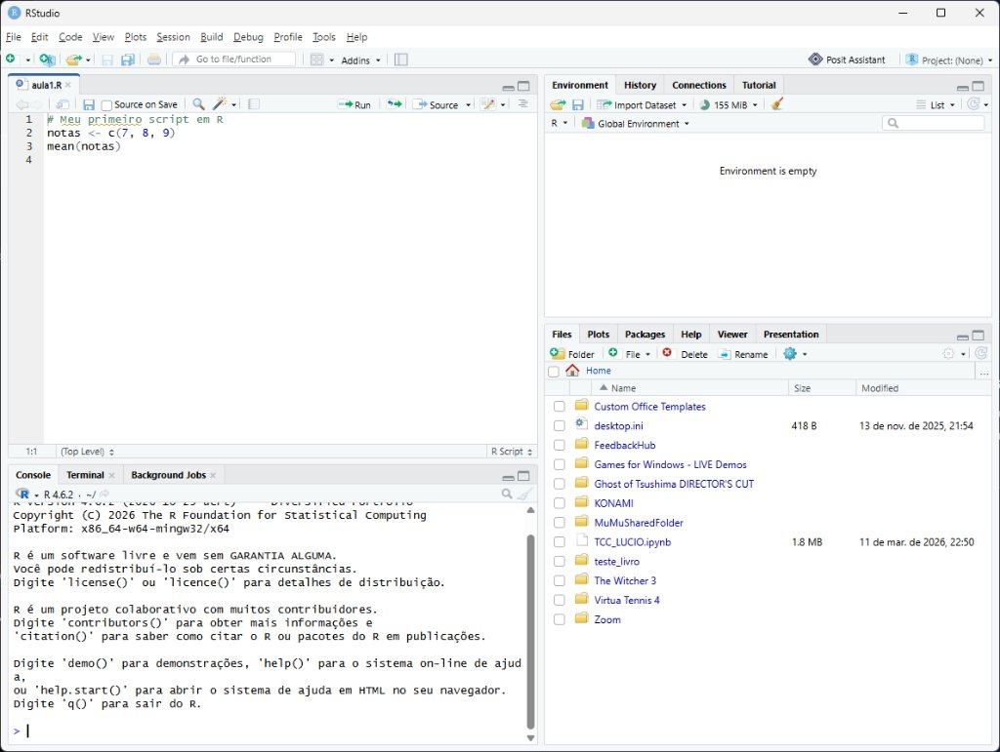

Primeiros Passos em R
Do notebook zerado até escrever, executar e interpretar seus primeiros comandos com confiança.
1. Setup + Visão Geral
Instalar R e RStudio juntos no notebook novo e entender onde o R entra na análise de dados.
2. Prática Guiada
Painéis do RStudio, calculadora, objetos com <-, vetores com c() e função mean().
3. Treino de Prova
3 desafios rápidos de prever a saída do código — exatamente como cai em concurso.
ggplot2 nem instalar o tidyverse hoje para não gastar a aula esperando download.
Onde o R entra na Análise de Dados?
Todo projeto de dados segue este fluxo — o R é a ferramenta que automatiza cada etapa com código.
Linhas = registros
O que o concurso costuma cobrar?
- Ler e interpretar pequenos trechos de código.
- Entender variáveis, vetores, funções básicas (
mean(),sum()) e tabelas (data.frame). - Identificar o que dá certo e o que gera erro de sintaxe.
Nosso foco hoje
Antes de transformar tabelas inteiras, precisamos aprender a falar o "beabá" do R: guardar valores, montar listas simples (vetores) e chamar funções.
Instalando R e RStudio no Notebook Novo
A ordem importa! Primeiro instalamos o motor (R), depois a oficina (RStudio).
Passo a passo no Windows
O que NÃO vamos fazer agora
- Não precisa rodar
install.packages("tidyverse")na aula de hoje (demora no Windows e não usaremos agora). - Se o Windows pedir atualização ou o download ficar lento, usamos o Posit Cloud no navegador na hora para não atrasar a prática.
R = o motor do carro. RStudio = o painel e o volante que deixam tudo mais fácil.
Conhecendo a Tela do RStudio (Print Real Anotado)
Na tela real do RStudio, você só precisa prestar atenção nos pontos marcados de ① a ④.

Escreva seu código aqui e salve o arquivo.
Vazio até rodar o código; depois lista objetos criados com
<-.
Ctrl + Enter para ver notas aparecer na hora em 3 e o resultado sair no Console (2).
1. O R como Calculadora
Antes de guardar dados, o R resolve contas exatamente na ordem matemática padrão.
Operadores básicos
+soma |-subtração*multiplicação |/divisão^potência (ex.:2^3dá8)( )parênteses definem prioridade
Vamos testar juntas no Script
10 + 5 * 2?" — reforça que multiplicação vem antes da soma, igual na matemática básica.
2. Criando Objetos com <-
Para não perder resultados, damos um nome a eles usando a setinha de atribuição <-.
Como ler em voz alta
nota1 <- 8
"O objeto nota1 recebe o valor 8."
- Atalho no RStudio:
Alt + -(digita a setinha com espaços automaticamente!). - Comentários com
#: o R ignora tudo que vem depois da cerquilha naquela linha. - Dica: criar um objeto não imprime o resultado na tela — para ver, digite o nome dele ou olhe no Environment.
Digite e rode linha por linha (Ctrl + Enter)
Observe no painel Environment os três objetos aparecendo!
<- (embora = também funcione em atribuição simples, em provas de R quase sempre aparece <-).
3. Regras de Nomes (Clássico de Concurso)
Uma letra trocada ou um símbolo fora do lugar basta para o R reclamar. Vamos entender por quê.
Pode usar
- Letras (
a-z,A-Z) - Números no meio/fim (
nota1) - Underline
_(padrão recomendado:nota_final) - Ponto
.(nota.final)
Dá erro!
- Começar com número:
1nota - Espaço no nome:
nota final - Hífen (o R lê como menos):
nota-final
Maiúscula ≠ Minúscula
O R é case-sensitive:
Regra prática: use tudo minúsculo separado por _.
Media com M maiúsculo para ver a mensagem vermelha de erro e perder o medo de errar no console.
4. Vetores com c()
Em análise de dados, raramente trabalhamos com um número só. Para juntar vários valores em uma sequência, usamos c().
O que significa c()?
Vem de combine (combinar). Ele agrupa vários elementos em um único objeto chamado vetor.
- Números:
c(7, 8, 9) - Textos (strings):
c("Ana", "Bia")— sempre entre aspas! - Poder do R (vetorização): quando você faz uma conta no vetor, o R aplica em todos os itens de uma vez.
Teste no seu Script
data.frame) no R nada mais é do que um vetor! Por isso dominar c() agora deixa a aula de tabelas muito mais fácil.
5. Chamando Funções (mean(), sum(), length())
Funções são comandos prontos que recebem dados entre parênteses e devolvem um resultado.
Anatomia de uma função
mean(x)→ calcula a média aritméticasum(x)→ calcula a soma totallength(x)→ conta quantos elementos há no vetorseq(1, 10)→ cria uma sequência de 1 a 10
Fechando o checklist de hoje
me e apertar Tab) e reforce que esquecer o ) no final deixa o Console preso no sinal +.
Desafio: Preveja a Saída Antes de Rodar!
Leia cada trecho com calma e responda o que o R vai mostrar na tela.
Questão 1
Quando
y foi criado, x valia 4. Mudar x depois para 10 não altera y retroativamente.
Questão 2
Operação vetorizada: multiplica cada número por 2 e soma 1 em cada resultado.
Questão 3
Já
mean(Valores) daria erro, porque Valores (com V maiúsculo) não existe.
O Que Conquistamos Hoje & Tarefa da Semana
Primeiro bloco do R vencido com o notebook novo funcionando!
Checklist de hoje
- R e RStudio instalados e testados no notebook novo.
- Diferença entre Script, Console e Environment.
- Operações matemáticas e comentários com
#. - Atribuição com
<-e regras de nomes. - Vetores com
c()e funções (mean(),sum()).
Para fazer até a próxima sexta
- Reler o Capítulo 2 do livro:
pt.r4ds.hadley.nz/workflow-basics.html - Fazer os exercícios do final do Cap. 2 direto no RStudio.
- Criar um script próprio com 5 comandos simples e anotar com
#o que cada linha faz. - Para a aula de Python: testar abrir o Google Colab na sua conta Google (ou combinamos a instalação).